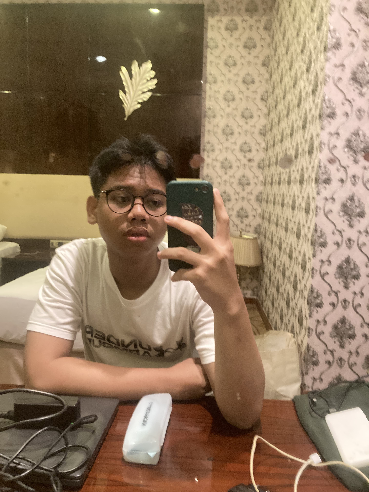
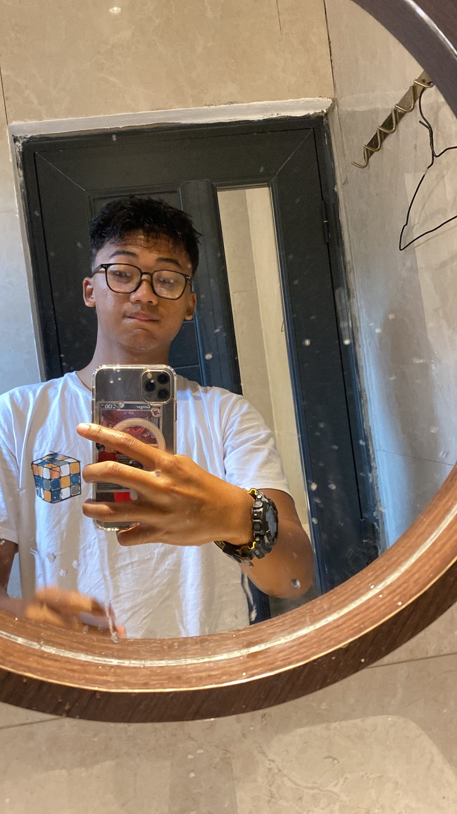
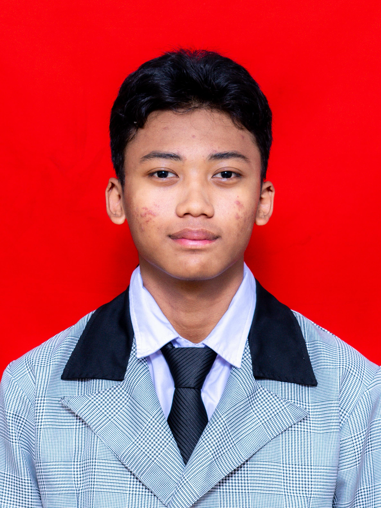

Inklusif
Portal berita yang didesain agar bisa didengar oleh tunanetra dan ramah bagi penderita buta warna.
Kami hadir di tengah arus informasi untuk menyajikan berita cepat, akurat, dan terpercaya.
Berita yang memberitakan isu nasional dan internasional


Pembaca aktif pada web ini
Berikut alasan mengapa anda harus memilih AksesPedia
Portal berita yang didesain agar bisa didengar oleh tunanetra dan ramah bagi penderita buta warna.
Sebab hak mendapatkan informasi digital harus setara untuk semua orang, tanpa hambatan fisik ataupun visual.
Meruntuhkan sekat digital agar teman-teman disabilitas bisa menjelajahi dunia lewat suara.
Kami percaya bahwa kesuksesan lahir dari kolaborasi, komunikasi, dan semangat belajar bersama.
"Jangan habiskan energimu untuk mengejar jejak kaki orang lain. Setiap orang punya garis start dan waktu finish yang berbeda."
Dimas Hadi Syandana
SMK Wikrama Bogor
"I'm not everything I want to be but I'm more than I was."

Prabu Alexandria Ardev
SMK Wikrama
Bogor
Sudah terwujud jangan lupa bersujud
Mochammad Hifzhi Syaukani
SMK Wikrama Bogor
Sumber informasi berita :
Butuh bantuan lebih lanjut? Pelajari cara memaksimalkan fitur-fitur AksesPedia di sini. Kalau pertanyaan kamu belum terjawab, jangan ragu buat hubungi tim kami, ya!
Anda bisa menghubungi kami melalui halaman Kontak.
Anda bisa mengubah tampilan website pada tombol "Sesuaikan tema" yang terletak di Navigasi Bar
Mulai perjalanan informasi tanpa batas semua berita politik, olahraga, teknologi, dan hiburan terkini dalam satu portal. Cepat, akurat, dan terpercaya.